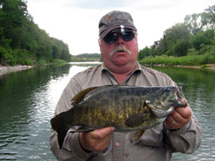
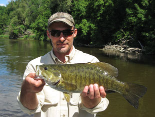

Ontario Trophy Smallmouth Bass
South central Ontario boasts some of the best smallmouth bass fishing in North America. At Grindstone, we pride ourselves in being able to offer not only a great smallmouth bass guide service, but a trophy smallmouth hunt with the best guides in the province. The bass in southern Ontario are found in lakes, ponds, streams and rivers. Depending on the water temperatures, current and food source, the smallmouth vary in size and physical condition. Generally, a bass that lives in a colder water environment differs from the fish of warmer water. Age is the critical factor. A 17” bass from colder habitat can be approximately 20 yrs. old, but the warmer water fish of the same size will be approximately 12 yrs. old. Colder water bass tend to be a little more opportunistic when feeding and it is not uncommon to catch them on small nymphs, wet flies or dry flies. In a river, bass can be very trout-like. We cover some different and varied waters for smallmouth bass, including the Lake Erie shoreline and flats, Niagara River, Grand River, Maitland River and the Saugeen River, to name a few. We offer both drift boat and wade trips for these locations.

Lake Erie Smallmouth
Lake Erie has an abundance of shallow water flats that are very accessible. On a great summer day, water temperatures can hover in the 70-76F or 20-24C degree range. The baitfish roll into and out of the flats depending on wind currents, and following right behind them are the smallmouth of the lake. These fish are extremely well fed and have the size to prove it. It is not uncommon to have a 15-20 fish morning or evening on the lake with a good number of those in the 3-4 pound class. Streamers and Poppers are the fly patterns of choice, but at certain times of any season, the enormous Hexagenia mayfly hatches create a feeding frenzy on the lake creating opportunities for some interesting dry fly fishing.
Niagara River Smallmouth
The Niagara River, which borders New York state and Ontario, has the largest water volume of any river in North America. Huge currents and side seams with boulders and weed beds create incredible habitat for bass and their forage. The Niagara has every positive attribute in river structure: sunken logs, rocky drop offs and shallow flats which provide cover and feeding areas for the large bass that call the river home. The current of the Niagara creates a situation where a 4 lb. bass can feel like a 20 lb. fish when fighting. They tend to use the current to their advantage. When hooked, they often take off for the depth and cover of fast water and then it’s up to the angler to fight it out. Swinging large streamers against drop offs, stripping streamers through structure, poppers against the banks and on the flats or dry flies during the hex hatch all work well on the Niagara River.
The Maitland River
The Maitland River is one of south central Ontario's premier smallmouth rivers. Generally, by the time our bass season opens, the Maitland is at a lower level and too shallow to run the drift boats; however, it is an incredible bass fishery and a wade trip on this river can produce some beautiful smallmouth. Like the bass of the Saugeen, the Maitland bass forage heavily on crayfish, minnows and the aquatic insect population of the river. Minnow, leach and crayfish fly patterns are the arsenal of flies required with some bass poppers thrown in for excitement. The river does have deeper pools and holes throughout its length as it rolls through the countryside. These deeper areas are where the summer bass make their home. As the water levels increase in the fall, the bass will wander a little farther into the mainstream areas in search of food. Once the September rains begin, we can get the boats on the water to pursue these great fish.
The Saugeen River
The Saugeen River has never stopped amazing anglers. This watershed runs from the higher elevations of the Niagara escarpment down to Lake Huron and is one of the best and most versatile fisheries in Ontario. If you want trophy smallmouth, this is the river. The bass of the Saugeen are widespread throughout the middle and lower sections of the river with great concentrations in the warmer water sections. The primary food source is crayfish; thousands of them, and because of that alone, the bass achieve large sizes and heavy weights. The mean temperature of the river is also colder than some of the other great smallmouth haunts, so the growth rate of the fish is much slower. These conditions produce very old and large smallmouth bass. We have landed 24” smallmouth in this river and fish in the 17”-21” category are quite common. We can honestly say that we see smallmouth in the 4-5 lb. class on almost every bass outing on the river. We do our best to make each outing a top water day, either by fishing poppers, sliders or taking advantage of the hatches on the river and work the bass on dry flies. The bass of the Saugeen can be trout-like. They will feed heavily on aquatic insects, so during a slow day, don’t be surprised if our guide sets you up as though you were fishing nymphs for trout to produce some great bass.
Book a Guided Fly Fishing Trip with Grindstone Angling
Contact us today to inquire about a guided trip on any of the great rivers in Ontario. You can call the shop at 905-689-0880 or using our guide trip inquiry form below. You can find out more about our services on our Ontario Fishing Guide Service page.